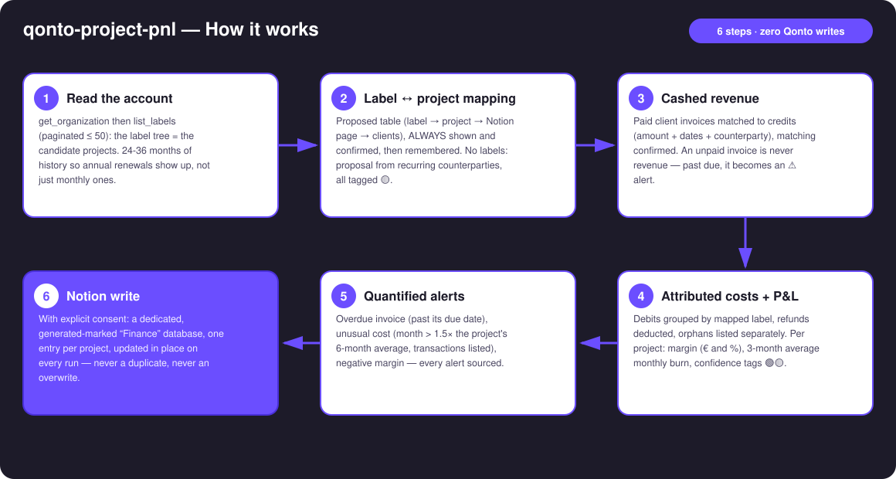
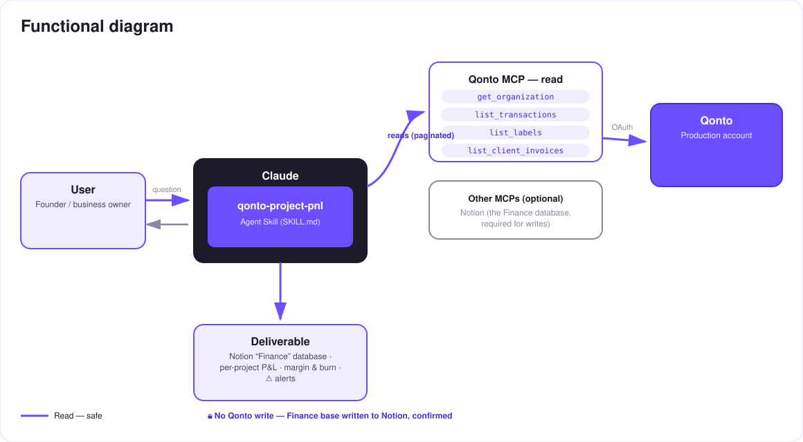

Your project docs finally tell the economic truth — a living, per-project P&L inside Notion.
Studios, agencies and indie hackers run their projects in Notion: the docs look great, the specs are current… but per-project profitability stays a mystery. The revenue is in the bank, the costs are in the bank — and the doc knows nothing. The skill closes the loop:
Cashed money only: paid invoices matched to incoming transactions (matching confirmed), attributed to their project.
Qonto labels ↔ projects, mapping confirmed once then remembered; refunds deducted, 24–36-month scan (annual renewals).
Per project: margin in € and %, 3-month average burn, confidence tags 🟢🟡.
Dedicated "Finance" database, one entry per project, refreshed on every run — alerts ⚠️ overdue invoice · unusual cost.
Would someone use this on a Monday morning? It answers the Monday-morning question: which projects deserve your week.
| Prerequisite | Detail | Required |
|---|---|---|
| Qonto production account | Adapts to any organization — get_organization first, nothing hardcoded | ✅ |
| Country | Universal — labels + invoices + transactions, no tax rules: every Qonto country (FR, DE, ES, IT, AT, NL, BE, PT) works identically | ℹ️ detected |
| Qonto MCP connected | Official connector (claude.ai / Claude Desktop), OAuth login | ✅ |
| Notion connector | The official connector — required for writing the Finance database. Without it: clean degraded mode (tables + HTML dashboard) | ⭕ recommended |
| Qonto labels per project | The account's "project" dimension. No labels: mapping proposed from recurring counterparties, everything tagged 🟡 | ⭕ recommended |
| Client invoices in Qonto | For cashed revenue and overdue alerts. Without: fallback to labelled credits (🟡) | ⭕ |

emitted_at vs settled_at), refunds deducted, pagination ≤ 50 everywhere, list_cash_flow_categories never called (403 on the claude.ai connector)
Zero Qonto writes — no money moves, anywhere. The single write lives on the Notion side: it requires explicit consent in the conversation, touches only the dedicated database marked as generated, and never modifies existing Notion content. Re-run = in-place update, never a duplicate.
| Property | Content | Example (invented) |
|---|---|---|
| Project | Project name — the idempotent update key | Aurora |
| Cashed revenue | Sum of paid invoices matched to transactions | €18,400 |
| Attributed costs | Labelled debits, refunds deducted | €7,150 |
| Margin | € and % | €11,250 · 61% |
| Monthly burn | Average of the last 3 full months | €2,380/month |
| Alerts | ⚠️ plain-language, quantified and sourced | ⚠️ 1 overdue invoice (INV-2026-042, 12 days) |
| Period · Updated | Window covered · timestamp of the last run | 2024-08 → 2026-07 · 1 min ago |
qonto-project-burn vs qonto-project-pnl| qonto-project-burn | qonto-project-pnl (this skill) | |
|---|---|---|
| The question | "Are we within budget?" | "Is this project making money?" |
| Scope | Costs vs declared budget, projected overrun date | Revenue AND costs → margin, burn |
| Destination | Linear / Jira — the product team | Notion — the project documentation |
| Alerts | Budget thresholds (80% / 100%) | Overdue invoice, unusual cost, negative margin |
They complement each other; for the company-wide view (runway, all-costs cockpit), see qonto-ceo-cockpit.
| Output | Format | When |
|---|---|---|
| Conversation reply | Markdown tables (per-project P&L, alerts, orphans) | Always — the baseline |
| "Finance" database in Notion | Dedicated "Finance — P&L (generated)" database, one entry per project, refreshed on every run | When the Notion connector is present + explicit consent |
| Interactive dashboard | HTML file/artifact: revenue vs costs bars, margin badge, burn, alert markers | When the host renders files; automatic fallback to tables otherwise |
The ≤ 3-minute demo attached to the PR walks through: the profitability mystery → the confirmed mapping → the computed P&L → the Notion project page showing "updated 1 min ago" → the idempotent re-run. All figures on screen are invented demo data. The detailed shooting script is kept internal (out of the repository).
| Idea | Effort | Note |
|---|---|---|
| Monthly history per project (a sub-table per entry) | Medium | The Finance database gains a time dimension |
Open quotes (list_quotes) as a "pipeline" column | Low | Signed vs cashed revenue, never conflated |
Hand overdue invoices to qonto-invoice-chaser | Low | Detection here, follow-up there |
| Implicit hourly rate (margin ÷ declared time) | Medium | Time stays user-declared — never invented |